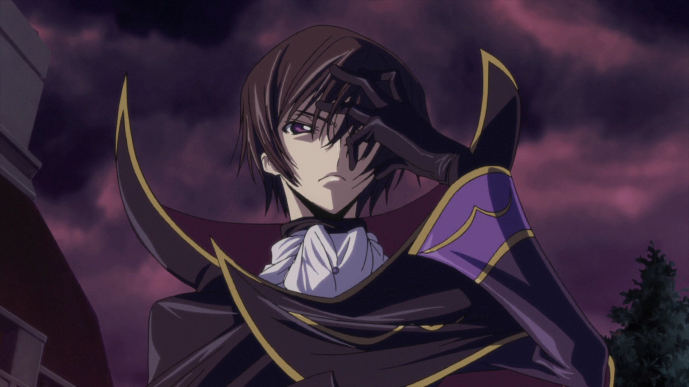
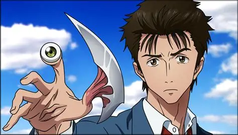
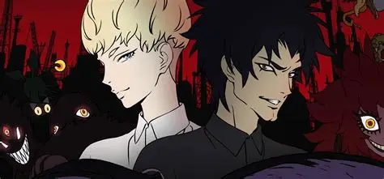
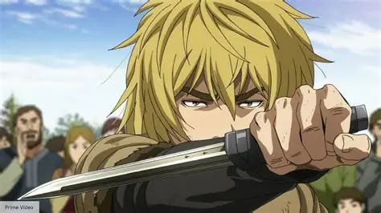
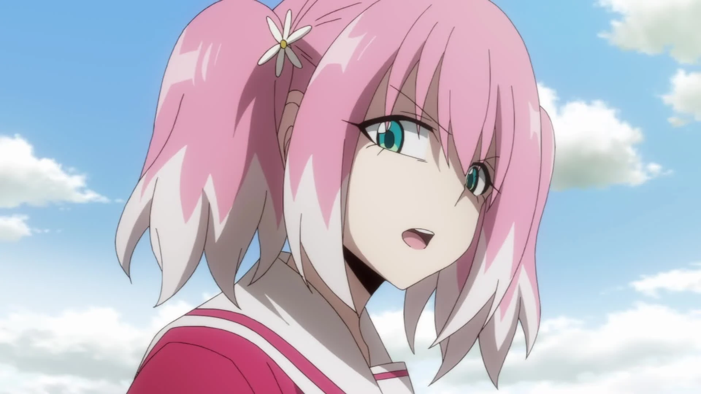
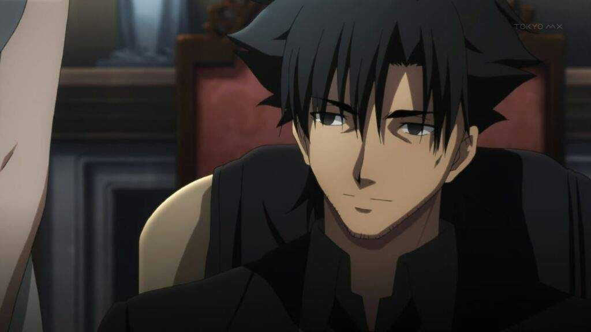

SMASH Senpai
Top 10 Anime Where the MC Slowly Becomes Evil
Not all villains are born monsters. Some start as heroes, victims, or idealists — until one decision at a time pushes them past the point of no return.
The most terrifying anime villains are often the ones we once rooted for. These stories explore how power, trauma, revenge, and twisted ideals can slowly corrupt even the most well-intentioned protagonists.
This list ranks the Top 10 Anime Where the Main Character Slowly Becomes Evil, featuring psychological descents, moral compromises, and unforgettable transformations from hero to villain. These anime don’t just show evil — they explain how it’s created.
Sponsored
#1 Death Note

Death Note is the definitive anime example of a protagonist who slowly transforms into a villain. Light Yagami begins the story as an intelligent, disciplined student who genuinely believes the world is rotten and deserves to be purified. When he discovers the Death Note, his initial goal feels almost noble: eliminate criminals and create a safer society.
What makes Light’s descent so disturbing is how gradual it is. He doesn’t snap overnight. Instead, each kill makes the next one easier. The more power he gains, the more justified he feels, and morality slowly turns into arrogance. Light stops seeing himself as human and starts viewing himself as a god whose judgment cannot be questioned.
The psychological battle between Light and L is where the anime truly shines. Light lies, manipulates, and sacrifices anyone who stands in his way — including innocent people. What’s terrifying is that he never believes he’s evil. In his mind, every horrific act is necessary for a “greater good.”
Death Note forces viewers to confront an uncomfortable question: how much evil can be justified if the outcome seems positive? By the end, Light is no longer a hero trying to save the world — he is the very monster he once claimed to fight.
- Episode count: 37
- Genre: Psychological, Thriller, Supernatural
- Core theme: Absolute power corrupts absolutely

play anime smash or pass here (not sponsored)
SMASH SENPAI – Smash or Pass#2 Code Geass
Lelouch Lamperouge is one of anime’s most complex protagonists, blurring the line between hero, anti-hero, and villain. His story begins with a righteous goal: overthrow the oppressive Britannian Empire and create a peaceful world for his sister. When Lelouch gains the power of Geass, he finally has the means to challenge an entire nation.
Unlike typical villains, Lelouch is fully aware that his actions are morally questionable. He uses manipulation, mind control, and mass sacrifice as strategic tools. Each victory brings him closer to his goal — but also pushes him further away from his humanity.
The tragedy of Lelouch’s character lies in his willingness to become evil if it means achieving peace. He accepts hatred, infamy, and bloodshed as the cost of revolution. Over time, the weight of his decisions isolates him, turning him into the very tyrant he despised.
Code Geass presents evil not as madness, but as a calculated choice. Lelouch’s transformation is painful to watch because it feels logical. By the end, he embraces the role of the world’s greatest villain — not for power, but so that the world can finally move forward without him.
- Episode count: 50
- Genre: Mecha, Political, Psychological
- Core theme: Sacrificing morality for peace
Sponsored
#3 Tokyo Ghoul

Tokyo Ghoul tells one of the most tragic transformations in anime history. Kaneki Ken starts as a gentle, introverted college student who values books, kindness, and human connection. After a brutal accident turns him into a half-ghoul, his entire understanding of morality and identity begins to collapse.
Unlike characters who chase power, Kaneki is forced into darkness. He is hunted, tortured, and constantly reminded that he no longer belongs to the human world. His suffering is not symbolic — it is physical and psychological, breaking him piece by piece until the person he once was can no longer survive.
Kaneki’s transformation is driven by trauma. Each act of violence he commits feels like a survival instinct rather than ambition. Over time, empathy turns into numbness, and self-doubt is replaced by ruthless resolve. He stops asking whether his actions are right and focuses only on protecting his own.
Tokyo Ghoul explores how cruelty creates monsters. Kaneki doesn’t become evil because he wants to — he becomes evil because the world leaves him no other choice. His story is a haunting reminder that morality can shatter under constant suffering.
- Episode count: 48
- Genre: Dark Fantasy, Psychological, Horror
- Core theme: Trauma-driven moral collapse
#4 Attack on Titan

Few anime protagonists undergo a transformation as shocking and controversial as Eren Yeager. Attack on Titan begins as a classic revenge story driven by survival and the desire for freedom.
Early on, Eren is impulsive, emotional, and fiercely protective of humanity. His hatred for the Titans feels justified, born from trauma and loss. The audience roots for him without hesitation.
As the truth about the world is revealed, Eren’s worldview shifts. The enemy is no longer simple, and freedom comes at an unbearable cost. His decisions become colder, more calculated, and increasingly extreme.
What makes Eren’s descent terrifying is its inevitability. He doesn’t snap — he adapts. Each choice pushes him further away from the boy he once was, until the line between hero and villain disappears.
- Episode count: 80+
- Genre: Action, Dark Fantasy, Psychological
- Best for: Moral ambiguity and existential themes
- core theme: A villain born from freedom itself
Sponsored
#5 Parasyte: The Maxim
Parasyte: The Maxim explores a slow and unsettling erosion of humanity rather than a dramatic fall into villainy. Shinichi Izumi’s transformation is subtle, psychological, and deeply unsettling.
After surviving a parasitic invasion that fuses an alien creature to his body, Shinichi is forced into constant life-or-death situations. Early on, he reacts with fear, guilt, and emotional vulnerability — clearly human reactions.
As the series progresses, Shinichi becomes colder and more detached. He begins to lose emotional responses to death, violence, and even the suffering of those close to him. His increasing reliance on logic over emotion marks a terrifying shift.
What makes Shinichi’s descent compelling is its realism. He doesn’t become evil — he becomes numb. The anime raises the question of whether survival at the cost of empathy is still humanity at all.
- Episode count: 24
- Genre: Sci-Fi, Horror, Psychological
- Best for: Existential and moral themes
- core theme: Loss of humanity feels inevitable
#6 Devilman Crybaby
Devilman Crybaby is not a story about power corrupting — it is a story about love being crushed by a cruel and unforgiving world. Akira Fudo begins as one of the most compassionate protagonists in anime.
After merging with a demon to fight other demons, Akira retains his human heart. He cries for others, feels pain deeply, and desperately wants to protect humanity. Unlike most dark protagonists, Akira never loses his empathy willingly.
However, the world around him descends into paranoia, hatred, and violence. Society collapses, trust evaporates, and fear turns humans into monsters. Akira’s goodness becomes a weakness in a world that no longer values it.
As tragedy piles upon tragedy, Akira’s emotional suffering becomes unbearable. His transformation is not about becoming evil, but about losing innocence in a world that punishes kindness relentlessly.
- Episode count: 10
- Genre: Psychological, Horror, Tragedy
- Best for: Emotional devastation and symbolism
- core theme: Goodness crushed by a broken world
Sponsored
#7 Moriarty the Patriot

Moriarty the Patriot presents one of the most intellectual and morally complex descents into villainy in anime. William James Moriarty is not driven by madness, trauma, or corruption — he is driven by purpose.
Living in a society ruled by corrupt nobility, William witnesses systemic injustice where the rich exploit the poor without consequence. Rather than accepting this reality, he decides to become the very evil required to destroy it.
Unlike impulsive anti-heroes, Moriarty is cold, composed, and deliberate. Every crime he commits is calculated to expose the rot within society. He willingly embraces the role of a criminal mastermind, knowing history will label him a villain.
What makes his descent compelling is that William never loses control. He sacrifices his own morality, reputation, and future for a greater ideal. His actions force the audience to question whether justice achieved through evil can still be considered justice at all.
- Episode count: 24
- Genre: Mystery, Psychological, Historical
- Best for: Intellectual anti-heroes
- core theme: Villainy chosen for a cause
#8 Vinland Saga
Vinland Saga presents one of the most realistic portrayals of how vengeance slowly destroys a person from the inside. Thorfinn begins as an innocent child with dreams of adventure and honor.
After witnessing the brutal murder of his father, Thorfinn’s life becomes defined by rage. He dedicates himself entirely to revenge, abandoning morality, empathy, and personal growth in pursuit of a single goal.
What makes Thorfinn’s descent so painful is how empty it becomes. Years pass, battles are fought, lives are taken — yet nothing fills the void. His identity erodes until revenge is the only thing keeping him alive.
Season 1 shows Thorfinn becoming increasingly hollow, emotionally numb, and violent. The anime does not glorify his actions. Instead, it exposes the cost of living without purpose beyond hatred.
- Episode count: 24
- Genre: Historical, Action, Psychological
- Best for: Realistic consequences of revenge
#9 Talentless Nana
Talentless Nana subverts expectations by placing the villain at the center of the story. Nana Hiiragi appears cheerful, kind, and heroic — but beneath that facade lies a trained assassin carrying out systematic murder.
Nana believes she is saving humanity by eliminating individuals deemed dangerous. She justifies her actions through loyalty to authority and a belief that sacrifice is necessary for peace.
As the series progresses, cracks begin to form in Nana’s convictions. Emotional connections with her targets force her to confront the humanity she was taught to ignore. Guilt and doubt slowly creep in.
Her descent is unique because it is quiet. Nana does not spiral into madness — she struggles internally, questioning whether the system she serves is truly just.
- Episode count: 13
- Genre: Psychological, Thriller, Mystery
- Best for: Moral deception and mind games
#10 Fate/Zero
Fate/Zero is a brutal exploration of idealism colliding with reality. Nearly every major character begins with noble intentions, yet the war they participate in slowly strips away their humanity.
Kiritsugu Emiya, the central figure, believes that sacrificing the few to save the many is the only rational path to peace. His methods are ruthless, calculated, and emotionally detached.
As the Holy Grail War unfolds, ideals collapse under the weight of consequence. Each character is forced to confront the truth that good intentions do not guarantee good outcomes.
Fate/Zero stands out because it refuses to offer easy answers. Every choice has blood on it, and victory feels hollow. The anime leaves viewers questioning whether heroism can exist in a world built on sacrifice.
- Episode count: 25
- Genre: Dark Fantasy, Psychological
- Best for: Tragic moral dilemmas
Play Smash or Pass on SMASH Senpai.
 PLAY SMASH OR PASS
PLAY SMASH OR PASS